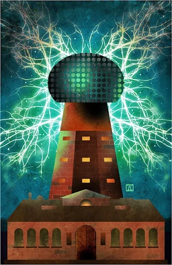

Como tarea PEC1 de la asignatura de Herramientas HTML y CSS I vamos a desarrollar un portal biográfico. Se ha seleccionado al biografía de Nicola Tesla por sus aportaciones a las telecomunicaciones, electricidad e informática modernas.
Como en el fondo de la tarea debe estar la estructura y maquetado y no los contenidos en sí, se ha dedicido tomar como base wikipedia cuyos contenidos son bajo licencia Creative Commons que permiten su libre reproducción.